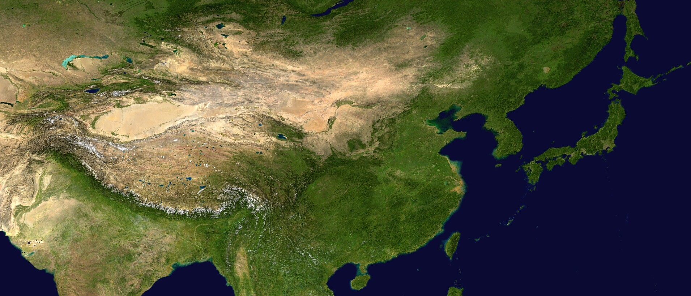
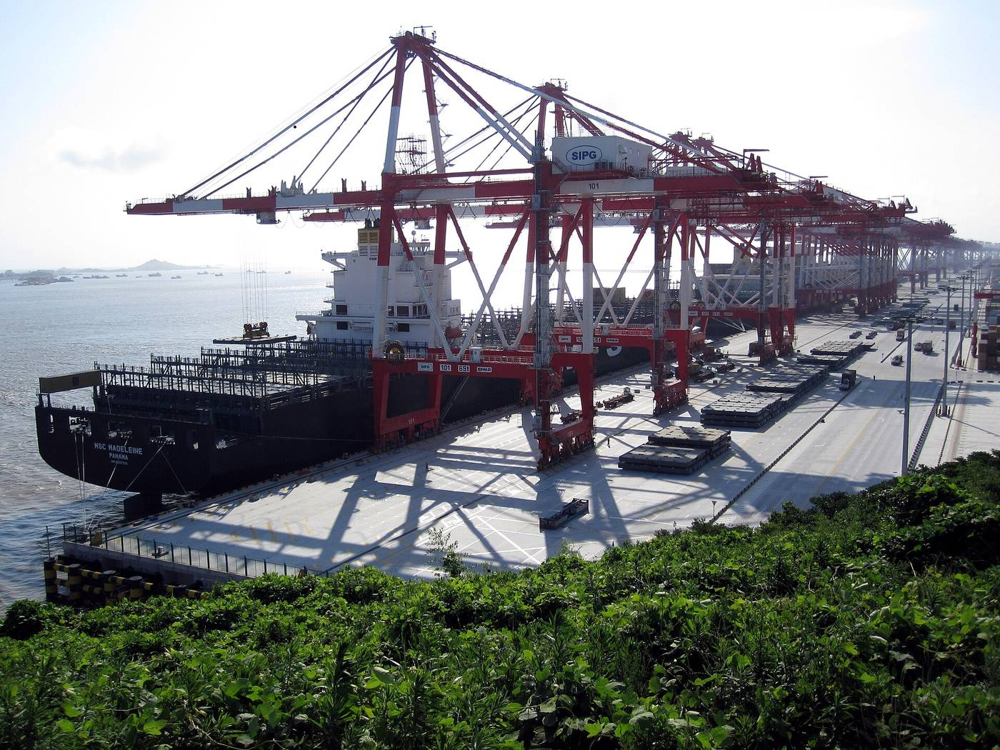

East Asia from space. The snowy arc is the Himalaya, the tan land is high plateau and desert, and the green east is where most people live.
Photo: NASA Earth Observatory (Blue Marble) · Wikimedia Commons · Public domain
Unit 1 of 10
Asia and Where China Sits
China is in East Asia, on the world's biggest continent, and it touches 14 countries by land.
- the five regions of Asia, and which one China is in
- the 14 countries on China's land border
- how China's size compares with the United States
- who China trades with most
- Region
- A group of countries that share a part of a continent.
- Land border
- The line where one country meets another on land.
- Trade
- Goods a country sells abroad (exports) plus goods it buys from abroad (imports).
- ASEAN
- A group of Southeast Asian countries that trade together as a bloc. It had 10 members until Timor-Leste joined in October 2025.
1.1 Asia, the biggest continent
Asia covers about 30% of all the land on Earth. It is also where most people live: about 6 out of every 10 people alive today, roughly 4.86 billion people, live in Asia.
The United Nations statistics office divides Asia into five regions for its tables:
- East Asia: China, Japan, South Korea, North Korea and Mongolia
- Southeast Asia: 11 countries, including Vietnam, Thailand, Indonesia, the Philippines, Malaysia and Singapore
- South Asia: India, Pakistan, Bangladesh, Nepal, Sri Lanka and their neighbors
- Central Asia: the five "-stans": Kazakhstan, Kyrgyzstan, Tajikistan, Turkmenistan and Uzbekistan
- West Asia: most of what Americans call the Middle East, plus Turkey
China is the giant of East Asia. It has about 1.405 billion people, the second most of any country.
1.2 China's size and its neighbors
China and the United States are almost the same size. Counting land only, China is slightly bigger: 9.33 million square kilometers against 9.15 million for the United States. Only Russia has more land.
China touches 14 countries by land border, tied with Russia for the most of any country in the world. Going around the map, they are North Korea, Russia, Mongolia, Kazakhstan, Kyrgyzstan, Tajikistan, Afghanistan, Pakistan, India, Nepal, Bhutan, Myanmar, Laos and Vietnam.
That land border is 22,457 km (13,954 miles) long. That's about five drives from New York to Los Angeles.
1.3 How close the neighbors are
The big cities of East Asia are close together. A nonstop flight from Shanghai to Seoul, South Korea, is shorter than many flights inside the United States.
Seoul is about 870 km from Shanghai. That is closer than Chicago is to New York (about 1,150 km).
1.4 Who China trades with
In 2025 China's biggest trading partner was not one country. It was ASEAN, the group of Southeast Asian countries. Goods worth $1.05 trillion moved between China and ASEAN that year. Next came the European Union, then the United States, which is China's biggest trading partner among single countries.
Most of that trade travels by ship, which is why China has many of the world's busiest container ports.


Check your understanding
- Which region of Asia is China in?
Show answer
East Asia, with Japan, South Korea, North Korea and Mongolia.
- Which two countries share the record for the most land neighbors, and how many is it?
Show answer
China and Russia, with 14 each.
- By land area, is China bigger or smaller than the United States?
Show answer
Slightly bigger: 9.33 million square km against 9.15 million.
- What was China's biggest trading partner in 2025?
Show answer
ASEAN, the group of Southeast Asian countries, with $1.05 trillion of trade.
Sources
- Wikipedia: Asia and Worldometer: Asia population
- UN Statistics Division: regional groupings (M49)
- Wikipedia: countries by area
- Wikipedia: Borders of China and Guinness World Records: most land boundaries
- Wikipedia: Mount Everest
- Flight times: Shanghai to Seoul, Tokyo, Singapore, Delhi
- Wikipedia: largest trading partners of China (China customs data, 2025)
- National Bureau of Statistics of China, 2025 statistical communiqué